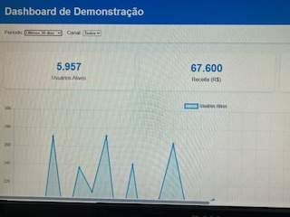
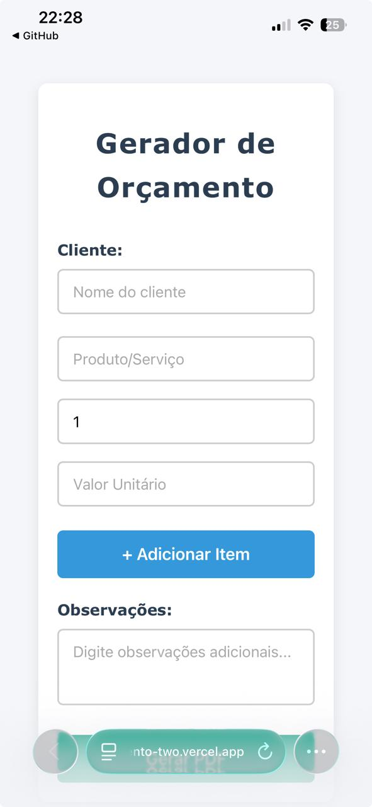
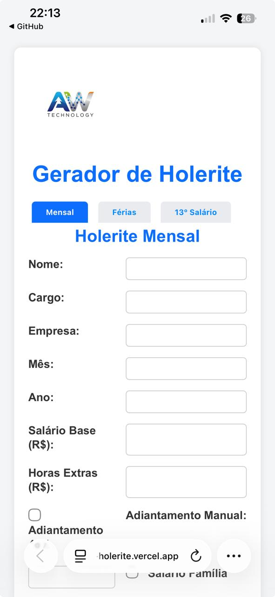
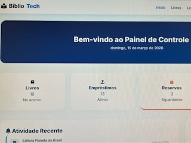
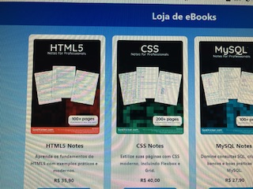
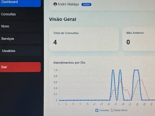
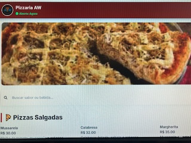
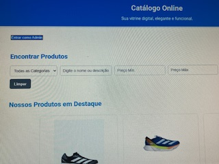
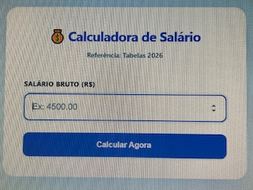

Gerador de Contrato
Automação de documentos jurídicos com preenchimento dinâmico de dados e exportação rápida.
JavaScriptAutomation
Uma coleção completa de sistemas funcionais desenvolvidos com foco em automação e experiência do usuário.
Automação de documentos jurídicos com preenchimento dinâmico de dados e exportação rápida.

Interface de monitoramento com métricas em tempo real e análise de performance.

Ferramenta para criação de propostas comerciais personalizadas com cálculos automáticos.

Cálculo preciso de folha de pagamento, proventos e descontos para gestão de RH.

Consumo de dados oficiais em tempo real via Fetch API para utilidade pública.

Painel administrativo robusto para controle de acervos e usuários em MySQL.

Landing Page de alta conversão otimizada para velocidade e experiência mobile.

Solução para otimização de horários e organização de atendimentos profissionais.

Interface moderna com carrinho dinâmico e integração direta com WhatsApp.

Aplicação escalável com gerenciamento de produtos via banco de dados NoSQL.
Site institucional focado em UX, com agendamento online e otimização de performance.

Ferramenta de cálculo de tributos (INSS/IRRF) atualizada com as tabelas vigentes.